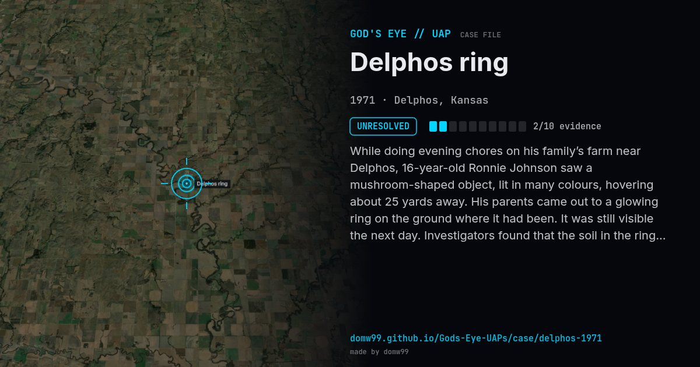

Delphos ring

While doing evening chores on his family’s farm near Delphos, 16-year-old Ronnie Johnson saw a mushroom-shaped object, lit in many colours, hovering about 25 yards away. His parents came out to a glowing ring on the ground where it had been. It was still visible the next day. Investigators found that the soil in the ring was dry beside damp ground and would not let water through, and that it held more calcium and soluble salts and was more acidic, with a white deposit of calcium oxalate. Both calcium oxalate and oxalic acid irritate skin and eyes, and Ronnie’s parents said touching the ring numbed their fingers. It is one of the classic UFO “landing trace” cases.
Explanation
No official body reached a conclusion. The soil results are the main physical evidence; sceptics note that the account rests on one family, and that fungi can leave rings of altered, water-repelling soil.
What was seen
Shape: Mushroom-shaped, with multicoloured lights
Witnesses: Ronnie Johnson (16) and his parents
Duration: Minutes